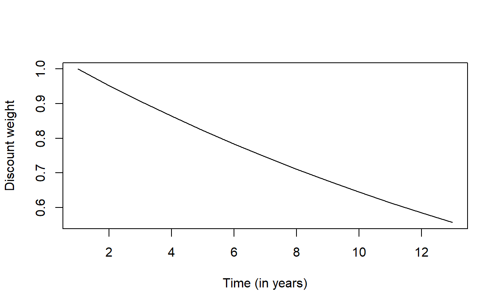

Discounting
Before starting
Watch the video explaining discounting and why we discount in health economic evaluations (to do so, you probably need to open open the tutorial in your browser using the ‘Open in Browser’ button on the upper left side of the screen.
Link to the video: https://vimeo.com/453418628/ad1222ead5
Aims and instructions
This assignment aims to introduce you to the concept of discounting in health economic evaluations, using a fictive example containing 3 interventions.
OF NOTE: the solutions which are provided are one way to perform the calculations, you can obtain the same results using other fomula’s. The last ‘Hint’ is always the solution of the assignment. Soultions can be copy/paste in the chunk as shown in the . Once you have completed a code chunk, you can run it by pushing the ‘Run code’ button on the upper-right side of the chunk.


The data
The assignment uses the df_thx object, which is already loaded in this tutorial.
The df_thx object contains 7 variables:
- Year = the year in which incremental costs and effects have been incurred (from Year 0 to 12)
- Inc_cost_A = INCREMENTAL costs (in euros) of intervention A in the different years
- Inc_QALY_A = INCREMENTAL effects (QALYs) of intervention A in the different years
- Inc_cost_B = INCREMENTAL costs (in euros) of intervention B in the different years
- Inc_QALY_B = INCREMENTAL effects (QALYs) of intervention B in the different years
- Inc_cost_C = INCREMENTAL costs (in euros) of intervention C in the different years
- Inc_QALY_C = INCREMENTAL effects (QALYs) of intervention C in the different years
Assume that all incremental costs and QALYs of these interventions are calculated against usual care.
Thedf_thx object is displayed herebelow. Have a look at this data.frame before starting the assignment.
Total undiscounted costs and effects
Before discounting the effects and costs, calculate the total undiscounted incremental costs and effects of each intervention. Store the results in the v_res_undisc vector, and have a look at your results.
v_res_undisc"Total incremental effects and costs are obtained by calculating the sum of each column.""Use the sum() or colSums() function."v_res_undisc <- colSums(df_thx[, c(2:ncol(df_thx))])
v_res_undiscQuestion
The correct undiscounted results are provided below (you can use these results to check your answer).Explanation answers
As can be seen in the table above, there are no differences concerning the UNDISCOUNTED incremental costs (€ 60000) and effects (4 QALYs) between the different interventions.
Undiscounted ICERs
Calculate the undiscounted ICERS for each of these interventions using the total incremental costs and effects you calculated in the previous step, or using the original df_thx object. Suggestion: store the results in the v_icer_undisc for instance.
v_res_undisc <- colSums(df_thx[, c(2:ncol(df_thx))]) # calculates the total UNDISCOUNTED costs and QALYs
v_icer_undisc"Since the different columns contain the incremental results. You have to divide total incremental costs by tot incremental effects for each intervention separately."v_res_undisc <- unname(v_res_undisc) # removes names, for clarity
v_icer_undisc <- c(ICER_A = v_res_undisc[1]/v_res_undisc[2],
ICER_B = v_res_undisc[3]/v_res_undisc[4],
ICER_C = v_res_undisc[5]/v_res_undisc[6]
)Question
The table below provides the ICERs for the different interventions.Explanation answers
There are no differences concerning the undiscounted ICERs between the different interventions, because there are no differences between the undiscounted incremental costs and effects.
Discount costs and effects
Define the discount weight as 5%, and call itr_disc. Use r_disc to create a vector of discount weights for Years 0 to 12, and save it as v_disc. Use the following formula to determine the discount weights: \[w_i = \frac{1} {(1+r)^{t_i}}\] where \(w_i\) is the discount weight in year \(i\), \(r\) the discount rate, and \(t_i\) year \(i\).r_disc
v_discr_disc <- 0.05
v_disc <- 1/(1 + r_disc) ^ df_thx$YearVector of discount weights
The following table and figure show how the discount weights changes over the years (correct code and answer).
r_disc <- 0.05
v_disc <- 1/(1 + r_disc) ^ df_thx$Year # create vector of discount weights
data.frame(
Year = df_thx$Year,
Discount_weight = round(v_disc, digits = 3)
)plot(v_disc, type = 'l',
xlab = "Time (in years)",
ylab = "Discount weight")
Question
Discount costs and effects
Apply discounting on the incremental effects and costs to convert them to their present value. Assign the discounted effects and costs to new columns of df_thx called Inc_cost_A_d, Inc_QALY_A_d, Inc_cost_B_d, Inc_QALY_B_d, Inc_cost_C_d, Inc_QALY_C_d. You can use the vector v_disc (defined in the previous code chunk) to do so.
r_disc <- 0.05
v_disc <- 1/(1 + r_disc) ^ df_thx$Year # create vector of discount weightsdf_thx$Inc_cost_A_d
df_thx$Inc_QALY_A_d
df_thx$Inc_cost_B_d
df_thx$Inc_QALY_B_d
df_thx$Inc_cost_C_d
df_thx$Inc_QALY_C_d"Multiply each column by the vector of discount weights to calculate discounted outcomes."df_thx$Inc_cost_A_d <- df_thx$Inc_cost_A * v_disc
df_thx$Inc_QALY_A_d <- df_thx$Inc_QALY_A * v_disc
df_thx$Inc_cost_B_d <- df_thx$Inc_cost_B * v_disc
df_thx$Inc_QALY_B_d <- df_thx$Inc_QALY_B * v_disc
df_thx$Inc_cost_C_d <- df_thx$Inc_cost_C * v_disc
df_thx$Inc_QALY_C_d <- df_thx$Inc_QALY_C * v_discr_disc <- 0.05
v_disc <- 1/(1 + r_disc) ^ df_thx$Year # create vector of discount weights
df_thx$Inc_cost_A_d <- df_thx$Inc_cost_A * v_disc
df_thx$Inc_QALY_A_d <- df_thx$Inc_QALY_A * v_disc
df_thx$Inc_cost_B_d <- df_thx$Inc_cost_B * v_disc
df_thx$Inc_QALY_B_d <- df_thx$Inc_QALY_B * v_disc
df_thx$Inc_cost_C_d <- df_thx$Inc_cost_C * v_disc
df_thx$Inc_QALY_C_d <- df_thx$Inc_QALY_C * v_discCalculate total discounted costs, effects, and ICERs
Calculate the total discounted incremental costs and effects, and ICERs for each intervention, store the discounted incremental costs and effects in the vector v_res_disc, and the ICERs in the vector v_icer_disc. The columns containing the discounted effects and costs have been added to the df_thx dataframe and are named as in the previous assignmend (for strategy A: Inc_cost_A_d and Inc_QALY_A_d).
v_res_disc
v_icer_discv_res_disc <- colSums(df_thx[, c("Inc_cost_A_d", "Inc_QALY_A_d",
"Inc_cost_B_d", "Inc_QALY_B_d",
"Inc_cost_C_d", "Inc_QALY_C_d")]) # calculate totals - discounted
v_res_disc <- unname(v_res_disc) # [OPTIONAL]: remove names
v_icer_disc <- c(ICER_A = v_res_disc[1]/v_res_disc[2],
ICER_B = v_res_disc[3]/v_res_disc[4],
ICER_C = v_res_disc[5]/v_res_disc[6]
) Questions
The discounted results should be the following.## ICER_A ICER_B ICER_C
## 16127.75 23828.03 16491.73Explanations
The discounted incremental costs of A and B are equal and remain higher than discounted incremental costs of C. Intervention A provides the highest discounted incremental effects followed by C and B. The discounted ICER of intervention A is the lowest (best value for money), followed by C and then B.
Follow-up question
Changing the discount rate
The following graph shows both the undiscounted results and discounted results for all three interventions, based on a user-defined discount rate. Answer the questions below by changing the discount rate appropriately. The default value is 5% (0.05) as in the exercises above.
Questions
A. Can you explain these results? Are these comparable with results obtained the previous step?
B. Can you explain why, even with a small discount rate (for example 0.1%) cost-effectiveness with discounting is always worse than cost-effectiveness without discounting?
Explanations
A. The effect observed in the previous step is only reinforced due to the higher yearly discount rate. Changing the discount rate does not change the order (in terms of ICER) of the interventions.
B. For all three programmes, costs are incurred earlier (in earlier years) than health benefits are gained. Consequently, when future costs and future effects are discounted, the present value of health effects decreases more than the present value of costs. Given that health benefits are discounted more heavily than than costs, the cost-effectiveness deteriorates (the ICERs go up) whenever any discount rate >0 % is applied.